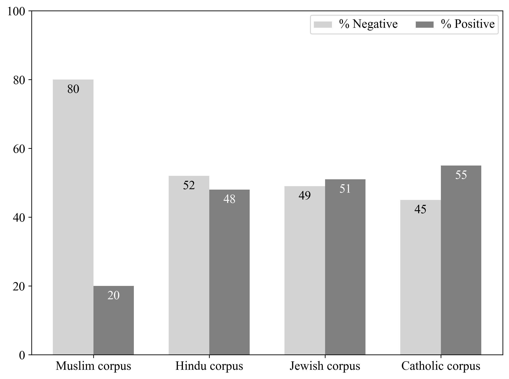
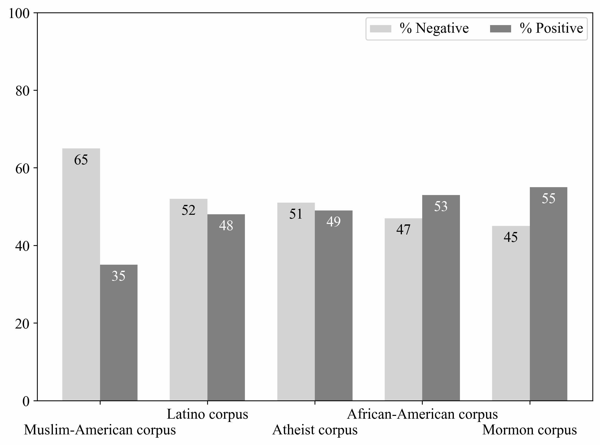
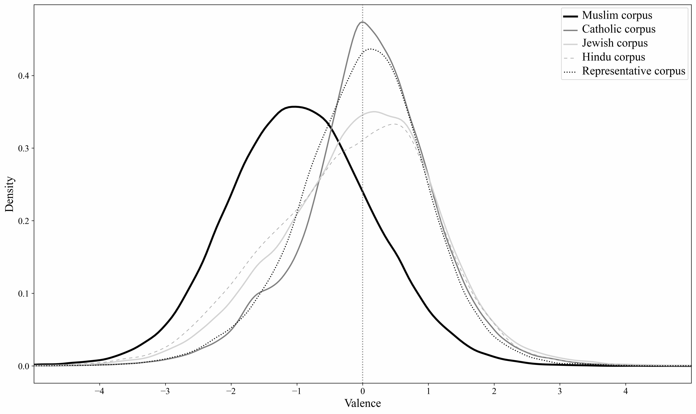
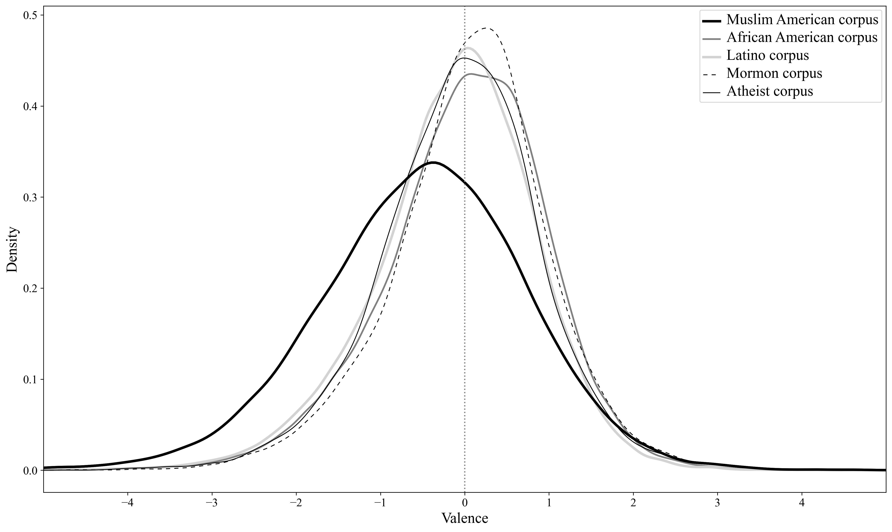
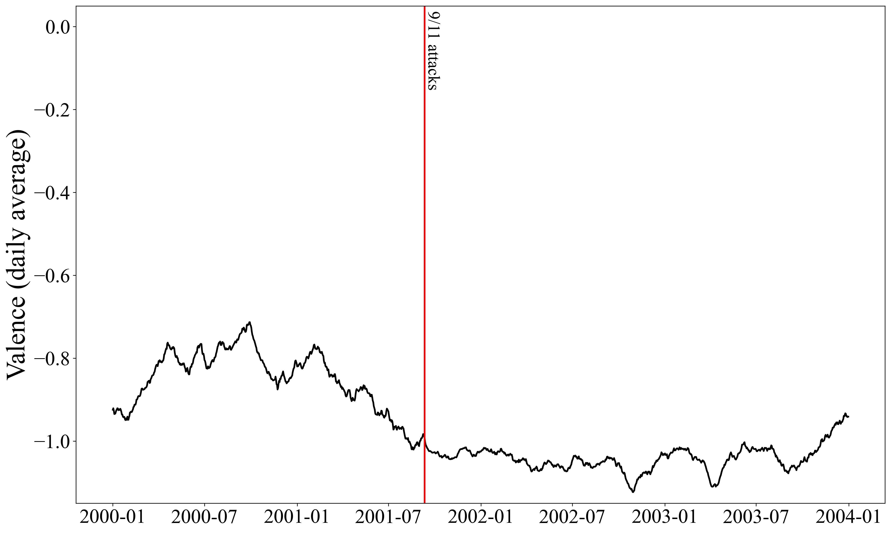
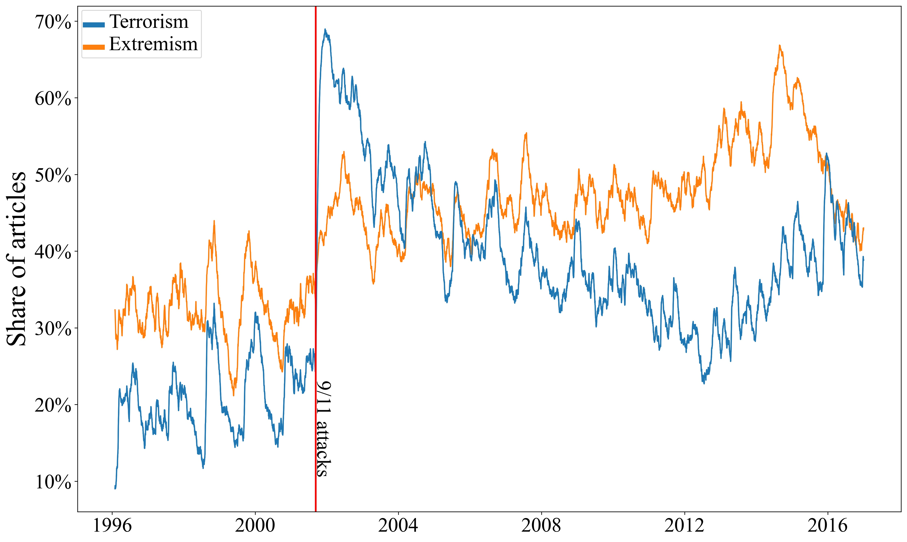
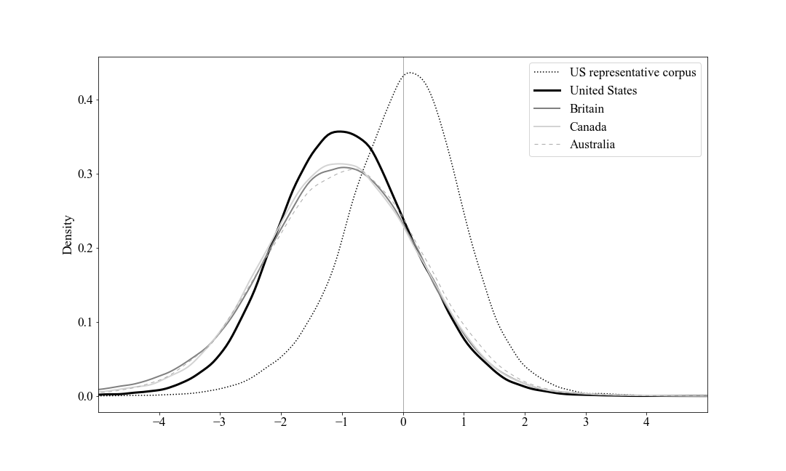
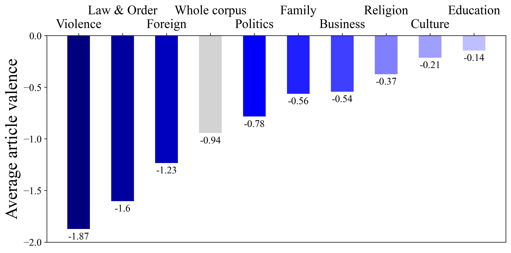

More about the book > A brief overview
A brief overview
Highlights and lessons
To mark the U.S. publication of the book, we published a thread on Twitter offering a summary overview of the contents and key findings of the book, along with some figures. We reproduce the thread here (edited for reading as a continuous document).
Our book, Covering Muslims: American Newspapers in Comparative Perspective, is now out in the United States with Oxford University Press and available at independent booksellers, as well as Amazon.
We hope Covering Muslims will engage scholars, students, activists, journalists & anyone interested in newspaper portrayals of Muslims, media analysis, or big data. The book has several key findings. But most importantly, there is one that cannot be overstated:
👉 COVERAGE OF MUSLIMS IS REMARKABLY NEGATIVE BY ANY MEASURE 👈
We provide the first systematic, large-scale analysis of American newspaper coverage of Muslims, using big data techniques and readings of individual articles.
We compare coverage of Muslims in the US to coverage of Catholics, Jews, Hindus, African Americans, Latinos, Mormons, and atheists.
Coverage of Muslims is FAR more negative than for any other group.
We analyze articles from 1996 through 2016—looking specifically at the effects of 9/11 and other major events on the number and tone of articles, as well as the words most commonly associated with Muslims.
We compare coverage in the US to that in Britain, Canada, and Australia, as well as to newspapers in India, Kenya, Malaysia, Nigeria, Pakistan, and Singapore.
We use topic modeling techniques to explore the themes most commonly associated with Muslims, identifying the ones that are the most (and least) negative.
We conclude by thinking through the ways in which media outlets reproduce biases—especially Islamophobia—and how media consumers can “tone-check” ✅ the media to offset some of those biases.
Cross-group comparisons
One main comparison we examine is coverage across groups.
Is coverage of Muslims really more negative than it is of other groups?
YES. By a long shot. One way to see this is by comparing the % negative and positive stories mentioning Muslims, Hindus, Jews, and Catholics.

Similarly, stories touching on Muslim Americans are more likely to be negative than those mentioning different US-based racial, ethnic, and (non-)religious minorities.

We use a new lexical sentiment analysis tool, MultiLexScaled, to measure not only whether an article is positive or negative, but also just how positive or negative it is benchmarked against a random sample of over 48,000 US newspaper articles.
This allows us to show that articles mentioning Muslims are far more negative than those touching on other religious groups. (The x-axis is standard deviations.)

Similarly, coverage of most other US-based groups is far less negative. US Muslims are a striking outlier.

In short, YES, coverage of Muslims is undeniably and strongly more negative than that of other groups. In fact, the average article about Muslims is more negative than 84% of our random sample of US newspaper articles. No other group comes close.
Over-time patterns and 9/11
We also looked at change over time. How big a deal was 9/11 for the newspaper coverage of Muslims?
Surprisingly, not much in terms of overall negativity, as we see if we chart valence from 2000-2003.

However, 9/11 did mark an enormous jump in the prevalence of references to terrorism and extremism.

This is clear, too, if we look at the words most commonly appearing right next to “Muslim” or “Islam” in newspaper articles since 9/11, shown in this word cloud (terrorism and extremism words are highlighted in black).
Comparisons across countries
We then looked at geographic comparisons in coverage.
If Muslim articles in the United States are so negative, is that unusual? We check by compiling comparable sets of articles from 1996 to 2016 from Britain, Canada, and Australia.
The answer is NO. Coverage of Muslims in these four countries is very similar. And similarly negative compared to our representative sample of articles.

Words like “radical,” “fundamentalist,” “militant,” and “extremist” are among the 10 most common words associated with Muslims or Islam in all four countries.
The picture changes a bit when looking at newspapers in India, Pakistan, Kenya, Nigeria, Singapore and Malaysia. The Kenyan newspaper is JUST as negative. The Malaysian newspaper is on average POSITIVE. The rest are in between.
World events do not dictate negative coverage with respect to Muslims. But developed Anglophone countries are uniformly extremely negative. Why is that? 🤔
Topics of coverage
A topic model shows that a large share of Muslim coverage is foreign coverage (news events in Muslim-majority countries such as those in the Middle East). Previous scholarship shows that foreign news tends to be negative, and we find this as well.
Not all of this news is negative about Muslims. About 3% of all coverage of Muslims is linked to the former Yugoslavia, Uighurs (China), and Rohingya (Myanmar). These articles tend to portray Muslims as victims of violence and oppression.
Also, not all topics of coverage are extremely negative. News articles about culture and education are close to neutral in valence, on average. This includes the article by @lydiakiesling with the art by @maxomatic that is featured on our book’s cover:
Somewhat surprisingly, news articles focused on religious topics are also much less negative than the average article in our dataset.

Islamophobia & tone-checking the news
On the whole, though, articles about Muslims and Islam are strikingly negative— negative compared to other groups, across time, across Anglophone countries, and across topics.
This raises the question of whether journalists are perpetuating Islamophobia. Even if they don’t mean to have that effect, their rhetoric has a cumulative impact. Negativity matters.
We show that negative coverage affects individual attitudes in forthcoming experimental research in Politics and Religion. We argue that readers need to “tone-check” ✅ the media.
When you read a story about Muslims, what words or allusions trigger a negative reaction? There are A LOT of these for Muslim articles. And for other marginalized groups. You can partly offset that instinct by realizing just how negative the story is. 🧐
Methodology: measuring negativity
For those interested in the methods, the sentiment analysis tool we used to assess the tone of Muslim coverage, MultiLexScaled, is available at GitHub here.
It includes python code and notebooks, along with the scaling parameters used to calibrate and benchmark valence measures.
The method outperforms individual lexica as well as some machine learning classifiers across a range of validation tests, and can be applied off-the-shelf. The code at GitHub also includes a text cleaning function to preprocess texts.